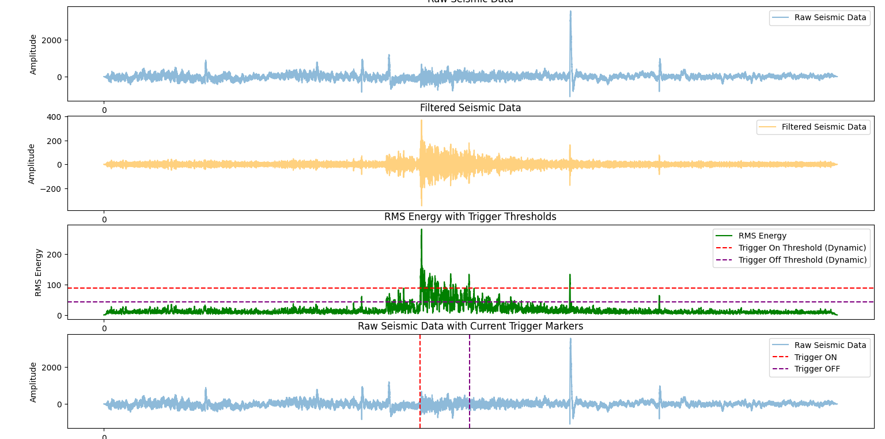
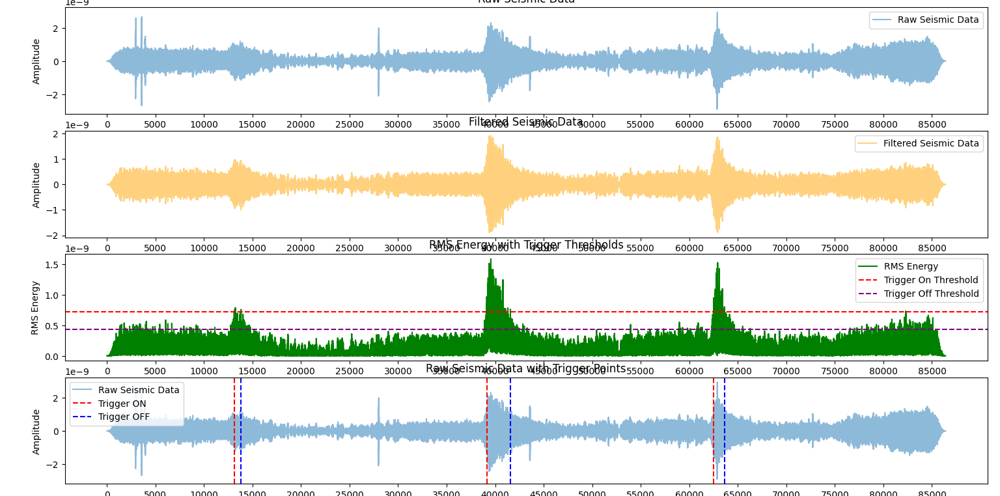

AstroNutzz 🥜
NASA Space Apps Challenge
AstroNutzz 🥜
Our challenge is to develop a computer program capable of analyzing real seismic data from the Apollo missions and the Mars InSight Lander to identify seismic quakes hidden within the noisy recordings. In planetary seismology, missions often struggle with the power requirements needed to send continuous, high-resolution seismic data back to Earth. Since transmitting large amounts of data over vast distances requires significant energy, only a fraction of the collected data is typically scientifically valuable. This makes it crucial to devise a method that can distinguish between useful signals and noise, allowing only important seismic data to be transmitted.
Our initial approach focused on using machine learning models and pattern recognition techniques. However, we quickly realized that there was not enough data to support this strategy due to the differences in the seismic characteristics between Earth, the Moon, and Mars. With varying frequencies and velocities between these planetary bodies, a direct application of AI models proved unfeasible. Thus, we pivoted towards a more traditional approach involving signal processing.
Our solution involves the following steps:
This approach has allowed us to efficiently navigate the complexities of planetary seismic data, where low signal-to-noise ratios and unique noise patterns present significant challenges. While our strategy relies on signal processing, we’re continually refining our method to improve its robustness and adaptability to new datasets.
Mars Data Analytics:
Moon Data Analytics:
First Plot (Light Blue - Raw Seismic Data):
The top plot shows the raw seismic signal as received directly from the seismic station. This unprocessed data can contain a lot of noise and undesired frequencies, making it hard to discern seismic events from random fluctuations. Peaks in this graph may indicate potential quakes or simply be noise spikes.
Second Plot (Orange - Filtered Seismic Data):
The second plot displays the filtered version of the same seismic data using a bandpass filter. This process retains only the frequencies of interest and eliminates unwanted noise. The filtered data is typically cleaner and more focused, making it easier to identify patterns that correspond to actual seismic events.
Third Plot (Green - RMS Energy with Trigger Thresholds):
The third plot shows the RMS (Root Mean Square) energy of the filtered seismic data. This is a measure of the signal’s power over time. The red dashed line represents the trigger-on threshold, and the purple dashed line represents the trigger-off threshold. Whenever the RMS energy surpasses the trigger-on threshold, it indicates the potential start of a seismic event. Conversely, when the RMS energy drops below the trigger-off threshold, it marks the end of that event.
Fourth Plot (Light Blue with Trigger Markers - Raw Seismic Data with Event Indicators):
The bottom plot shows the same raw seismic data from the first plot, but with trigger markers overlaid. The red vertical lines indicate the Trigger ON points, marking the beginning of detected seismic events, and the purple vertical lines indicate Trigger OFF points, marking the end of the events. This allows us to visually confirm where in the raw data the quakes are occurring.
Overall, this multi-step visualization helps in understanding how raw seismic signals are processed and how seismic events are identified based on RMS energy and dynamically set thresholds.